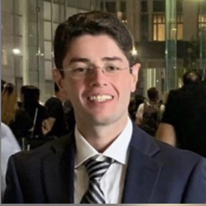

Department of Mechanical Engineering — Batman University
Associate Professor studying the kinematics, synthesis, and optimization of mechanisms — from four-bar linkages and compound bows to origami-inspired and AI-assisted mechanism design.
Onur Denizhan is an Associate Professor in the Department of Mechanical Engineering at Batman University, where he leads a robotics research laboratory focused on the analysis, synthesis, and optimization of mechanisms. His work spans classical kinematics — four-bar linkages, cam systems, and static balancing — as well as robotic manipulator dynamics, origami-inspired compliant mechanisms, and the application of artificial intelligence and neural networks to mechanism design and analysis.
He earned his Ph.D. in Mechanical Engineering & Mechanics from Lehigh University in 2021, advised by Prof. Meng-Sang Chew, following an M.Sc. at Lehigh and doctoral research at Columbia University on a robotic spine brace project under Prof. Sunil K. Agrawal. Since 2021, he has supervised graduate research at Batman University and served across departmental, university, and international committees, including the IFToMM Young Faculty Group and, since 2026, the IFToMM Technical Committee for Linkages and Mechanical Control.
Beyond the lab, he teaches courses spanning mechanisms, dynamics, control, robotics, and computer-aided design at both the undergraduate and graduate level, and is a Scientific Publication Incentive Award recipient from TÜBİTAK.

"Incorporation of Kinematic Analysis, Synthesis and Optimization into Static Balancing." Advisor: Meng-Sang Chew, Ph.D.
Incomplete; transferred to Lehigh University. Advisor: Sunil K. Agrawal, Ph.D.
"Three-Position Four-Bar Linkage Mechanism Synthesis, Static Balancing and Optimization of Automotive Engine Hood." Advisor: Meng-Sang Chew, Ph.D.
"Energy Efficiency-Based Design and Applications on the Central Air Conditioning Systems." Advisor: Suat Canbazoglu, Ph.D.
The Design of Mechanisms via Artificial Intelligence
Increasing the Efficiency of Composite Materials Manufacturing Productivity by Using Artificial Intelligent Methods
Robotics and AI in Manufacturing for Speedy Recycling
Linkage Mechanism Optimization and Sensitivity Analysis of an Automotive Engine Hood
Optimum Design of a Spring-Loaded Linkage Mechanism in the Presence of Friction for Static Balancing
Optimum Synthesis and Design of a Hood Linkage for Static Balancing in One-Step
Dynamic Modelling of the Spring Attached Two-Link Planar Manipulator
Integrated Optimum Design of a Torsion Spring-Compensated Automotive Engine Hood Linkage Mechanism
A Three-Link Gravity-Balanced Mechanism for Operating Room Assistance
Optimization and an Investigation on Different Optimum Design Configurations of an Eccentric Twin-Cam Compound Bow
Comparison of Different Supervised Learning Algorithms for Position Analysis of the Slider-Crank Mechanism
Tribological and Mechanical Properties of Nanofilled Glass Fiber Reinforced Composites and Analyzing the Tribological Behavior Using Artificial Neural Networks
A Systematic Kinematic Analysis and Experimental Verification of an Eccentric Twin-Cam Compound Bow
Application of Various Artificial Neural Network Algorithms for Regression Analysis in the Dynamic Modeling of a Three-Link Planar RPR Robotic Arm
The Euler-Lagrange Equations of Motion for the Three-Link Planar RPR Robotic Arm
The Future of Engineering Laboratory Courses: Virtual Laboratory Experiments
Application of a Narrow Neural Network Algorithm to Dynamic Analysis Results of a One-Link Planar Robotic Arm
Editorial Board
Invited Talks & Keynotes
Mechanism and Machine Theory · Mechatronics · Engineering Applications of Artificial Intelligence · Scientific Reports · Alexandria Engineering Journal · Discover Applied Sciences · Konya Journal of Engineering Sciences · Dicle University Journal of Engineering · MDPI (Machines, Robotics, Designs) · Journal of Mechanical Science and Technology · Part P: Journal of Sports Engineering and Technology · Scientific Journal of Mehmet Akif Ersoy University · Black Sea Journal of Engineering and Science · Batman University Journal of Life Sciences · Gazi Journal of Engineering Sciences · Journal of Materials Science: Materials in Engineering · Bitlis Eren University Journal of Science · International Journal of Energy and Smart Grid · Ain Shams Engineering Journal.